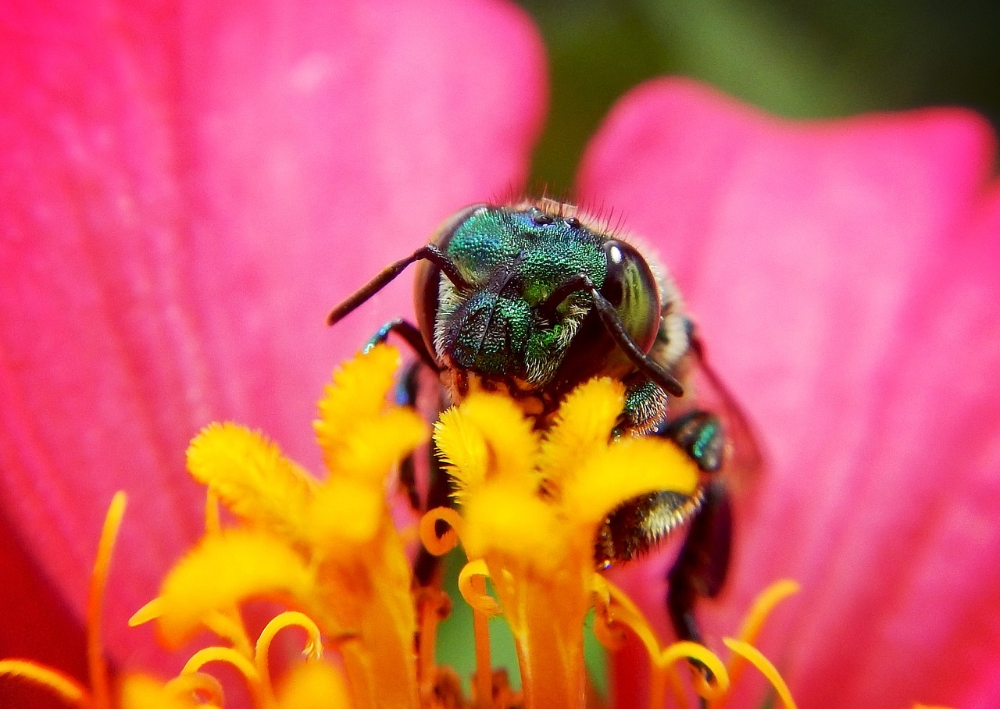

<!DOCTYPE html>
<html lang="en">

    <head>
        <meta charset="UTF-8" />
        <meta name="description" content="Why does biodiversity matter? Without biodiversity, we would not exist. Biodiversity creates food, pharmaceutical drugs, shelter, and clean air.">
        <link rel="stylesheet" href="styles.css">
        <title>Biodiversity - Why Biodiversity Matters</title>
    </head>
    
    <body>
        
    </body>
    
</html>
<!DOCTYPE html>
<html lang="en">

    <head>
        <meta charset="UTF-8" />
        <link rel="stylesheet" href="styles.css">
        <title>Biodiversity - Why Biodiversity Matters</title>
    </head>
        <body>

            <header>
                <h1>Why Biodiversity Matters</h1>
            </header>

            <nav>
                <ul class="nav">
                    <li><a href="index.html">Home</a></li>
                    <li><a href="whatisbiodiversity.html">What Is Biodiversity?</a></li>
                    <li><a href="whybiomatters.html">Why Biodiversity Matters</a></li>
                    <li><a href="humanimpact.html">Human Impact</a></li>
                    <li><a href="whatcanwedo.html">What Can We Do?</a></li>
                    <li><a href="otherresources.html">Other Resources</a></li>
                </ul>
                
            </nav>
            
            

            <div class="whyBioMattersContent">
                <p>
                    As mentioned in the, "What is Biodiversity?" page, biodiversity is incredibly important. Without it, humans would not be able to survive. We rely on biodiversity for our food, water, shelter, and even the air we breathe!

Without our rainforests, we would lose access to many rare plants that we use for life-saving pharmaceutical drugs. Without the biodiversity in our soil, our agricultural system would fail. Without biodiversity in our rivers and oceans, we would lose our clean drinking water and a MAJOR food source for most of the world's population. 

Without biodiversity, our lives as we know it would change dramatically, and not for the better. We NEED biodiversity to function. Think of biodiversity like a diet. For a human to be healthy, they need a well balanced diet of fruits, vegetables, a protein source (typically meat), carbohydrates, etc. Biodiversity is essentially a diet. Without a variety of different organisms working in tandem with each other (just like the nutrients and vitamins in our diet interacting with the cells in our bodies), ecosystems fail and die out, just like we would if we didn't have a balanced diet!
                </p>
            </div>

        
        </body>
        
    </html>
    